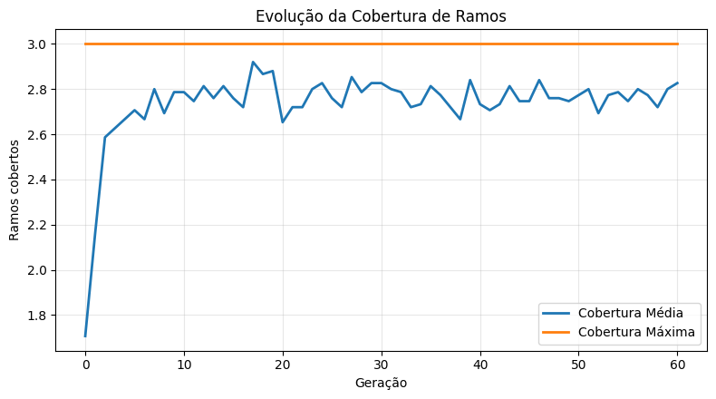

# @title Configuração de Ambiente
!pip -q install deap numpy matplotlib
import os
import warnings
warnings.filterwarnings('ignore')
os.environ['CUDA_VISIBLE_DEVICES'] = '-1'
print("✅ Ambiente configurado (DEAP, NumPy, Matplotlib) — CPU forçada, logs silenciados")
# Saída de Célula Esperada: ✅ Ambiente configurado (DEAP, NumPy, Matplotlib) — CPU forçada, logs silenciados
[notice] A new release of pip is available: 25.0.1 -> 25.3
[notice] To update, run: pip install --upgrade pip
✅ Ambiente configurado (DEAP, NumPy, Matplotlib) — CPU forçada, logs silenciados
Workshop Prático — Aula 7: SBST com DEAP#
Objetivo: implementar um gerador de testes evolutivo (DEAP) que maximiza a cobertura de ramos de uma função complexa, com instrumentação baseada em sys.settrace.
# @title Instrumentador de cobertura e função-alvo
from typing import Callable, Dict, List, Set, Tuple
import sys
import random
import numpy as np
_ACTIVE_COVERAGE_SET: Set[str] = set()
def record_branch(branch_id: str) -> None:
"""Registra a ativação de um ramo identificado por uma string.
Parameters
----------
branch_id : str
Identificador único do ramo (ex.: 'tipo_invalido', 'equilatero', etc.).
"""
if isinstance(_ACTIVE_COVERAGE_SET, set):
_ACTIVE_COVERAGE_SET.add(branch_id)
class CoverageInstrumenter:
"""Instrumenta a execução de uma função-alvo para coletar ramos cobertos.
Usa sys.settrace para isolar a execução da função-alvo. A coleta de cobertura
é feita por marcadores explícitos via `record_branch(...)` inseridos na função.
Essa abordagem é não invasiva, pedagógica e suficiente para fins de SBST.
"""
def __init__(self, target_func: Callable[..., object]) -> None:
"""Cria um instrumentador para uma função.
Parameters
----------
target_func : Callable[..., object]
Função Python a instrumentar.
"""
self.target_func = target_func
self.captured: Set[str] = set()
def _tracer(self, frame, event, arg):
# Mantemos o tracer simples; ele apenas garante que a execução está
# sob rastreamento enquanto os marcadores preenchem o conjunto ativo.
return self._tracer
def run(self, *args, **kwargs) -> Tuple[object, Set[str]]:
"""Executa a função-alvo capturando os ramos ativados.
Returns
-------
Tuple[object, Set[str]]
Resultado da função e o conjunto de ramos cobertos nesta execução.
"""
global _ACTIVE_COVERAGE_SET
previous = _ACTIVE_COVERAGE_SET
_ACTIVE_COVERAGE_SET = set()
sys.settrace(self._tracer)
try:
result = self.target_func(*args, **kwargs)
finally:
sys.settrace(None)
self.captured = set(_ACTIVE_COVERAGE_SET)
_ACTIVE_COVERAGE_SET = previous
return result, set(self.captured)
# Documento dos ramos esperados (meta de cobertura)
EXPECTED_BRANCHES: Set[str] = set([
'tipo_invalido', 'nao_positivo', 'zero_invalido',
'borda_inequidade', 'nao_triangulo', 'triangulo_valido',
'equilatero', 'isosceles', 'escaleno',
'retangulo', 'obtusangulo', 'acutangulo',
])
def classificador_triangulo_complexo(a: int, b: int, c: int) -> str:
"""Classifica um triângulo com validações, tipos e ângulos.
Parameters
----------
a, b, c : int
Lados do triângulo.
Returns
-------
str
Categoria combinada, p.ex. 'escaleno-ret', 'equilatero-acu'
ou 'invalid'/'nao_triangulo'.
"""
# Tipos válidos
if not all(isinstance(x, int) for x in (a, b, c)):
record_branch('tipo_invalido')
return 'invalid'
# Domínio
if a == 0 or b == 0 or c == 0:
record_branch('zero_invalido')
return 'invalid'
if a < 0 or b < 0 or c < 0:
record_branch('nao_positivo')
return 'invalid'
# Ordena para facilitar verificações
x, y, z = sorted([a, b, c])
# Desigualdade triangular
if x + y == z:
record_branch('borda_inequidade')
return 'nao_triangulo'
if x + y < z:
record_branch('nao_triangulo')
return 'nao_triangulo'
record_branch('triangulo_valido')
# Por lados
if a == b == c:
tipo = 'equilatero'
record_branch('equilatero')
elif a == b or b == c or a == c:
tipo = 'isosceles'
record_branch('isosceles')
else:
tipo = 'escaleno'
record_branch('escaleno')
# Por ângulo (Pitágoras generalizado)
x2, y2, z2 = x*x, y*y, z*z
if z2 == x2 + y2:
ang = 'ret'
record_branch('retangulo')
elif z2 > x2 + y2:
ang = 'obt'
record_branch('obtusangulo')
else:
ang = 'acu'
record_branch('acutangulo')
return f'{tipo}-{ang}'
# Smoke test
ins = CoverageInstrumenter(classificador_triangulo_complexo)
_, covered = ins.run(3, 4, 5)
print(f"✅ Instrumentação ativa. Ramos cobertos por (3,4,5): {sorted(list(covered))}")
# Saída Esperada: inclui 'triangulo_valido', 'escaleno', 'retangulo'
✅ Instrumentação ativa. Ramos cobertos por (3,4,5): ['escaleno', 'retangulo', 'triangulo_valido']
Parte 2 — Baseline com testes aleatórios#
Geramos amostras aleatórias e medimos a cobertura sem otimização para evidenciar o platô de descoberta de ramos raros.
# @title Baseline de cobertura via amostragem aleatória
def random_case(low: int = -5, high: int = 50) -> Tuple[int, int, int]:
"""Gera um trio aleatório (a, b, c) no intervalo dado.
Returns
-------
Tuple[int, int, int]
Valores inteiros de lados.
"""
return (
random.randint(low, high),
random.randint(low, high),
random.randint(low, high),
)
def random_baseline(n_samples: int = 1500) -> Set[str]:
"""Executa n amostras aleatórias e retorna ramos cobertos.
Parameters
----------
n_samples : int
Número de amostras aleatórias.
Returns
-------
Set[str]
Conjunto de ramos cobertos.
"""
cov: Set[str] = set()
instrumenter = CoverageInstrumenter(classificador_triangulo_complexo)
for _ in range(n_samples):
a, b, c = random_case()
try:
_, covered = instrumenter.run(a, b, c)
cov |= covered
except Exception:
continue
return cov
random.seed(42); np.random.seed(42)
baseline_cov = random_baseline(1500)
print(f"🎲 Cobertura aleatória: {len(baseline_cov)}/{len(EXPECTED_BRANCHES)} ramos "
f"({100*len(baseline_cov)/max(1,len(EXPECTED_BRANCHES)):.1f}%)")
print("Ramos:", sorted(list(baseline_cov)))
# Saída Esperada (aprox.): 🎲 Cobertura aleatória: 8-10/12-13 ramos (~65-80%)
🎲 Cobertura aleatória: 10/12 ramos (83.3%)
Ramos: ['acutangulo', 'borda_inequidade', 'escaleno', 'isosceles', 'nao_positivo', 'nao_triangulo', 'obtusangulo', 'retangulo', 'triangulo_valido', 'zero_invalido']
Parte 3 — Algoritmo Genético (DEAP)#
Configuramos a representação (indivíduo = [a,b,c]), operadores e fitness como a contagem de ramos cobertos.
# @title Definição do GA (DEAP)
from deap import base, creator, tools, algorithms
# Protege contra reexecução no notebook
try:
creator.create('FitnessMax', base.Fitness, weights=(1.0,))
except Exception:
pass
try:
creator.create('Individual', list, fitness=creator.FitnessMax)
except Exception:
pass
LOW, HIGH = -5, 60
toolbox = base.Toolbox()
toolbox.register('attr_int', random.randint, LOW, HIGH)
toolbox.register('individual', tools.initRepeat, creator.Individual, toolbox.attr_int, n=3)
toolbox.register('population', tools.initRepeat, list, toolbox.individual)
instrumenter = CoverageInstrumenter(classificador_triangulo_complexo)
def evaluate(ind: List[int]) -> Tuple[float]:
"""Avalia um indivíduo como a contagem de ramos únicos cobertos.
Parameters
----------
ind : List[int]
Caso de teste [a, b, c].
Returns
-------
Tuple[float]
Fitness de maximização.
"""
a, b, c = ind
try:
_, covered = instrumenter.run(int(a), int(b), int(c))
return (float(len(covered)),)
except Exception:
return (0.0,)
toolbox.register('evaluate', evaluate)
toolbox.register('mate', tools.cxTwoPoint)
toolbox.register('mutate', tools.mutUniformInt, low=LOW, up=HIGH, indpb=0.3)
toolbox.register('select', tools.selTournament, tournsize=3)
print('✅ Toolbox configurada (evaluate/mate/mutate/select)')
# Saída Esperada: ✅ Toolbox configurada (evaluate/mate/mutate/select)
✅ Toolbox configurada (evaluate/mate/mutate/select)
# @title Execução do GA e coleta de estatísticas
def run_ga(
pop_size: int = 150,
ngen: int = 60,
cxpb: float = 0.6,
mutpb: float = 0.35,
seed: int = 42,
) -> Tuple[list, tools.Logbook, tools.HallOfFame]:
"""Executa o algoritmo genético e retorna população, log e HoF.
Parameters
----------
pop_size : int
Tamanho da população.
ngen : int
Número de gerações.
cxpb : float
Probabilidade de crossover.
mutpb : float
Probabilidade de mutação.
seed : int
Semente para reprodutibilidade.
Returns
-------
Tuple[list, tools.Logbook, tools.HallOfFame]
População final, logbook e Hall of Fame.
"""
random.seed(seed)
np.random.seed(seed)
pop = toolbox.population(n=pop_size)
hof = tools.HallOfFame(20)
stats = tools.Statistics(lambda ind: ind.fitness.values[0])
stats.register('avg', np.mean)
stats.register('max', np.max)
pop, log = algorithms.eaSimple(
pop, toolbox, cxpb=cxpb, mutpb=mutpb, ngen=ngen,
stats=stats, halloffame=hof, verbose=True
)
return pop, log, hof
pop, log, hof = run_ga()
print('🏁 GA finalizado. Top 5 indivíduos:')
for i, ind in enumerate(hof[:5]):
print(f" {i+1:02d}. {list(ind)} -> fitness={ind.fitness.values[0]:.1f}")
# Saída Esperada (resumo): linhas de evolução por geração e top-5 finais
gen nevals avg max
0 150 1.70667 3
1 100 2.16 3
2 120 2.58667 3
3 112 2.62667 3
4 112 2.66667 3
5 112 2.70667 3
6 108 2.66667 3
7 108 2.8 3
8 116 2.69333 3
9 104 2.78667 3
10 108 2.78667 3
11 125 2.74667 3
12 124 2.81333 3
13 113 2.76 3
14 115 2.81333 3
15 114 2.76 3
16 110 2.72 3
17 108 2.92 3
18 102 2.86667 3
19 104 2.88 3
20 113 2.65333 3
21 126 2.72 3
22 107 2.72 3
23 113 2.8 3
24 116 2.82667 3
25 121 2.76 3
26 105 2.72 3
27 108 2.85333 3
28 101 2.78667 3
29 106 2.82667 3
30 107 2.82667 3
31 111 2.8 3
32 108 2.78667 3
33 113 2.72 3
34 113 2.73333 3
35 108 2.81333 3
36 96 2.77333 3
37 107 2.72 3
38 105 2.66667 3
39 105 2.84 3
40 127 2.73333 3
41 120 2.70667 3
42 97 2.73333 3
43 112 2.81333 3
44 106 2.74667 3
45 112 2.74667 3
46 116 2.84 3
47 103 2.76 3
48 104 2.76 3
49 113 2.74667 3
50 106 2.77333 3
51 116 2.8 3
52 108 2.69333 3
53 106 2.77333 3
54 109 2.78667 3
55 107 2.74667 3
56 108 2.8 3
57 118 2.77333 3
58 109 2.72 3
59 118 2.8 3
60 113 2.82667 3
🏁 GA finalizado. Top 5 indivíduos:
01. [42, 51, 52] -> fitness=3.0
02. [20, 34, 46] -> fitness=3.0
03. [28, 49, 22] -> fitness=3.0
04. [50, 15, 53] -> fitness=3.0
05. [38, 9, 32] -> fitness=3.0
Parte 4 — Montagem da suíte e visualização da convergência#
# @title Construção gulosa da suíte de testes
from typing import Optional
def covered_branches_of(ind: List[int]) -> Set[str]:
"""Retorna os ramos cobertos por um indivíduo [a,b,c].
Parameters
----------
ind : List[int]
Caso de teste.
Returns
-------
Set[str]
Ramos cobertos.
"""
_, cov = instrumenter.run(*ind)
return cov
def greedy_suite(candidates: List[List[int]], target: Set[str]) -> Tuple[List[List[int]], Set[str]]:
"""Seleciona iterativamente casos que mais aumentam a cobertura.
Parameters
----------
candidates : List[List[int]]
Casos candidatos (ex.: HoF + elite da população).
target : Set[str]
Ramos desejados.
Returns
-------
Tuple[List[List[int]], Set[str]]
Suíte construída e ramos cobertos.
"""
remaining = set(target)
suite: List[List[int]] = []
covered_total: Set[str] = set()
cache: Dict[Tuple[int,int,int], Set[str]] = {}
for ind in candidates:
key = tuple(ind)
cache[key] = covered_branches_of(ind)
while remaining:
best: Optional[List[int]] = None
best_gain = -1
for ind in candidates:
cov = cache[tuple(ind)]
gain = len(cov & remaining)
if gain > best_gain:
best_gain = gain
best = ind
if best is None or best_gain == 0:
break
suite.append(best)
covered_total |= cache[tuple(best)]
remaining = target - covered_total
return suite, covered_total
# Candidatos: Hall of Fame + elite da população
cands = [list(ind) for ind in hof]
elite = sorted(pop, key=lambda i: i.fitness.values[0], reverse=True)[:80]
cands += [list(ind) for ind in elite]
suite, cov = greedy_suite(cands, EXPECTED_BRANCHES)
print(f"🧪 Suíte: {len(suite)} casos")
print(f"📈 Cobertura: {len(cov)}/{len(EXPECTED_BRANCHES)} ramos "
f"({100*len(cov)/max(1,len(EXPECTED_BRANCHES)):.1f}%)")
for i, ind in enumerate(suite, 1):
print(f" {i:02d}. {ind} -> ramos: {sorted(list(covered_branches_of(ind)))}")
# Saída Esperada: Cobertura próxima de 100% com ~4-7 casos
🧪 Suíte: 3 casos
📈 Cobertura: 6/12 ramos (50.0%)
01. [42, 51, 52] -> ramos: ['acutangulo', 'escaleno', 'triangulo_valido']
02. [33, 33, 52] -> ramos: ['isosceles', 'obtusangulo', 'triangulo_valido']
03. [33, 33, 33] -> ramos: ['acutangulo', 'equilatero', 'triangulo_valido']
# @title Visualização da convergência
import matplotlib.pyplot as plt
gens = log.select('gen') if hasattr(log, 'select') else [rec['gen'] for rec in log]
avg_ = log.select('avg') if hasattr(log, 'select') else [rec['avg'] for rec in log]
max_ = log.select('max') if hasattr(log, 'select') else [rec['max'] for rec in log]
plt.figure(figsize=(8, 4.5))
plt.plot(gens, avg_, label='Cobertura Média', lw=2)
plt.plot(gens, max_, label='Cobertura Máxima', lw=2)
plt.xlabel('Geração')
plt.ylabel('Ramos cobertos')
plt.title('Evolução da Cobertura de Ramos')
plt.grid(True, alpha=0.3)
plt.legend()
plt.tight_layout()
plt.show()
# [GRÁFICO: linhas para média e máximo por geração]

Conclusões#
A instrumentação com
sys.settracee marcadores permite medir cobertura de forma não invasiva.A fitness baseada na contagem de ramos guia o AG a descobrir casos raros.
A suíte construída cobre ramos essenciais com poucos casos, automatizando a geração de testes.